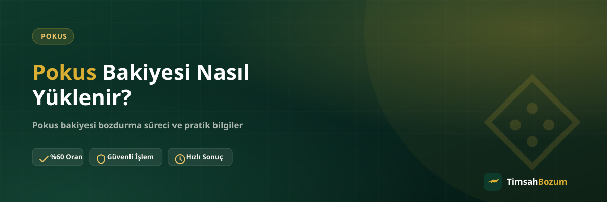

Pokus bakiyesini oyun içi harcamalarda kullanmak ya da ileride bozdurmak isteyenlerin ilk sorusu genellikle aynı: bakiye hesaba nasıl yükleniyor? Yükleme adımlarını doğru bilmek hem gereksiz hata yapmanı önler hem de hesabında biriken bakiyeyi daha bilinçli yönetmeni sağlar.
Pokus Bakiyesi Hesaba Nasıl Yansır?
Pokus bakiyesi, Pokus'un kendi uygulaması veya anlaşmalı satış kanalları üzerinden yapılan bir yükleme işlemiyle hesaba tanımlanır. Yükleme sonrasında bakiye hesabında görünür hale gelir ve oyun içi satın alımlarda kullanılabilir. TimsahBozum bu yükleme sürecinin bir parçası değildir; biz yalnızca hesabında zaten var olan, kullanılmamış bakiyenin nakde çevrilmesiyle ilgileniriz.
Yükleme İçin Hangi Yöntemler Kullanılır?
Bakiye yüklemesi genellikle uygulama içi satın alma ekranından veya yetkili satış noktalarından temin edilen kodların hesaba girilmesiyle yapılır. Hangi yöntemi kullanacağın, Pokus'un kendi platformunda sunduğu seçeneklere bağlı. Güncel yükleme yöntemleri ve ekran adımları için Pokus'un resmi uygulamasını veya yetkili satış kanallarını referans almak en doğrusu.
Yükleme Sonrası Bakiye Ne Zaman Kullanılabilir Hale Gelir?
Yükleme işlemi tamamlandığında bakiye genellikle anında hesaba yansır ve oyun içinde kullanılabilir duruma gelir. Yükleme sonrası bakiyenin görünmediğini düşünüyorsan, uygulamayı yeniden başlatıp bakiye ekranını tazelemek çoğu zaman sorunu çözer. Bakiyenin yüklendiğinden emin olmak için işlem sonrası gelen bildirim veya makbuzu saklaman faydalı olur.
Yükleme Sırasında Hata Alırsan Ne Yapmalısın?
Yükleme işlemi sırasında bazen bağlantı sorunları veya yanlış bilgi girişi nedeniyle hata alınabilir. Böyle bir durumda ilk yapman gereken, işlemin gerçekten tamamlanıp tamamlanmadığını hesap bakiyeni kontrol ederek doğrulamak. Bakiye yansımadıysa ve ödeme hesabından düşmüşse bu durumu Pokus'un kendi destek kanalına bildirmen gerekir; TimsahBozum yükleme sürecine müdahale edemez, yalnızca tamamlanmış bir yüklemenin bakiyesini bozdurabilir.
Yüklerken Dikkat Edilmesi Gereken Noktalar Nelerdir?
Yükleme yaparken en sık karşılaşılan sorun, yanlış hesaba veya yanlış tutarla işlem yapılması. İşlemi onaylamadan önce hesap bilgisi ve yüklenecek tutarı bir kez daha kontrol etmek, sonradan düzeltilmesi zor olabilecek bir hatayı baştan önler. Ayrıca yükleme işlemini yalnızca resmi uygulama veya yetkili kanallar üzerinden yapmak, hesabının güvenliği açısından önemli.
Birden Fazla Kez Yükleme Yaparsan Bakiye Nasıl Birikir?
Pokus bakiyesi her yükleme işleminde mevcut tutarın üzerine eklenir; yani önceki yüklemelerin üstüne yeni bir yükleme yaptığında toplam bakiye birikmeye devam eder. Zaman içinde farklı tutarlarda birkaç kez yükleme yapan kullanıcıların hesabında kullanılmamış bakiye önemli bir toplama ulaşabilir. Bu durum, ileride bozdurma düşünüldüğünde tek seferde değerlendirilecek bir tutar oluşmasını sağlar.
Yükleme Makbuzunu veya Bildirimini Saklamalı mısın?
Yükleme işlemi tamamlandığında gelen bildirim veya makbuz, ileride bir soru çıkması durumunda elinde bulunması faydalı bir kayıttır. Hangi tarihte ne kadar yükleme yaptığını gösteren bu bilgi, bakiyenin kaynağını hatırlaman gerektiğinde işine yarayabilir. Bu kayıtları yalnızca dijital olarak saklamak, fiziksel bir belgeye göre hem daha pratik hem de kaybolma riski daha düşük.
Başkası Adına Pokus Bakiyesi Yüklenebilir mi?
Hediye olarak birine Pokus bakiyesi yüklemek mümkün, bunun için genellikle alıcının hesap bilgisini bilmen yeterli oluyor. Hediye olarak yüklenen bakiye de normal yükleme gibi hesaba yansır ve aynı şekilde kullanılabilir hale gelir. Sana bu şekilde aktarılan bir bakiyeyi kullanmayı düşünmüyorsan, bunu da kendi bakiyen gibi bozdurma kapsamına dahil edebilirsin.
Yükleme Sırasında Kazanılan Bonus Bakiye de Bozdurulur mu?
Bazı dönemlerde yükleme yaparken hesabına ek bonus bakiye tanımlanabiliyor. Bonus bakiyenin normal bakiyeden farklı bir kuralı olup olmadığı duruma göre değişebileceği için, elindeki tutarın ne kadarının bonus ne kadarının doğrudan yükleme olduğunu bilmen faydalı olur. İşlem öncesi bu ayrımı WhatsApp'tan belirtmen, güncel bilginin net şekilde teyit edilmesini sağlar.
Yüklediğim Bakiyeyi Kullanmazsam Ne Olur?
Yüklenen ama oyun içinde harcanmayan bakiye hesabında birikmeye devam eder. Bu bakiyeyi değerlendirmenin iki yolu var: ileride oyun içi satın alımlarda kullanmak ya da kullanmayı düşünmüyorsan Pokus bozdurma hizmetiyle nakde çevirmek. Hangi seçeneği tercih edeceğin tamamen ihtiyacına bağlı, bakiyenin bir süre hesapta beklemesi kendi başına bir sorun oluşturmaz.
Yüklenen Bakiyenin Tamamını mı Kullanmalısın, Bir Kısmını mı Bozdurmalısın?
Pokus bakiye tabanlı bir hizmet olduğu için, hesabında biriken tutarın tamamını bozdurmak zorunda değilsin. İstediğin kadarını oyun içinde kullanmaya devam edip kalan kısmı bozdurabilir, ya da bakiyenin tamamını nakde çevirebilirsin. Bu esneklik, bakiyeni nasıl değerlendireceğine karar verirken elini rahatlatan bir detay.
Pokus Bakiyesi Yüklemek ile Bozdurmak Aynı Süreç mi?
Hayır, ikisi tamamen farklı işlemler. Yükleme, Pokus'un kendi platformu üzerinden gerçekleşen bir satın alma sürecidir. Bozdurma ise hesabında zaten bulunan kullanılmamış bakiyeyi WhatsApp üzerinden bilgini paylaşarak nakde çevirdiğin bir hizmettir. Bu ikisini karıştırmamak, hangi işlem için nereye başvurman gerektiğini netleştirir.
Pokus Bakiyesi Bozdurmak Güvenilir mi?
Bakiyeni bozdururken üyelik, form doldurma veya kimlik belgesi istenmez, hesabına erişim de verilmez. Tek ihtiyacın, güncel bakiyeni gösteren okunaklı bir ekran görüntüsü ve WhatsApp üzerinden iletişim. Resmi numara dışında bir kanaldan gelen taleplere bilgi paylaşmadan önce numarayı doğrulamak, olası bir dolandırıcılık girişimine karşı en basit önlem.
Bakiyeni yükledikten sonra kullanmayacağına karar verdiysen, güncel oranı öğrenmek için WhatsApp hattımıza yazarak işlemini başlatabilirsin.
İlgili Yazılar
- Pokus Bakiyesi Nedir, Nasıl Oluşur?
- Kullanılmayan Pokus Bakiyesini Değerlendirmenin Yolları
- Pokus Bakiyesi Bozdurmadan Önce Kontrol Etmen Gerekenler